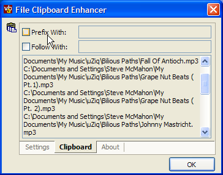

VB5 File Clipboard Enhancer (99K)
VB5 File Clipboard Enhancer (99K)
 VB6 File Clipboard Enhancer (95K)
VB6 File Clipboard Enhancer (95K)
 23 Aug 2003
23 Aug 2003
First Posted
 Subclassing Without The Crashes
Subclassing Without The Crashes
 vbAccelerator Visual Studio Style Tab Control
vbAccelerator Visual Studio Style Tab Control
 Add Your App to the Systray the Easy Way
Add Your App to the Systray the Easy Way
 Setting Your Application to Automatically Run When Windows Starts
Setting Your Application to Automatically Run When Windows Starts

File Clipboard Enhancer
Work with Explorer and files more easily
Windows Explorer allows you to cut, copy and paste files. However, whilst it uses the clipboard to do this, the file information is not made generally accessible as a custom clipboard is used. Often it's useful to be able to paste a file name as text: for example, into a file name field in an application or into a batch or text file which can be used for batch renaming or other automated tasks. This utility allows for this by monitoring the clipboard and creating text entries for any files which appear on the clipboard.
About the Utility
The main function of the utility is simple: intercept clipboard change events, check if the clipboard contains any data about files copied from Windows Explorer; if so then extract the file names and then add them to the existing data as text.
Processing Clipboard Data
Intercepting clipboard change events is done using the Windows Clipboard Viewer API. This API allows an application to register itself as clipboard "viewer" (ostensibly to display the contents of the clipboard somehow or other to the user, however, since the API only notifies when changes occur you don't actually need to provide any sort of UI). The Clipboard Viewer class is used to do this.
Windows sometimes notifies clipboard changes too early, when the application that's changing the clipboard still has it open and is adding extra data. If another application has the clipboard open, attempting to read it will cause errors. To prevent this occuring, a 50ms timer is started whenever the clipboard has changed. Only when this timer fires is the clipboard checked.
Determining the contents of the clipboard and reading which files are present is done using the Custom Clipboard class. This class enables the types of data on the clipboard to be determined, and any arbitrary format type to be read or set. The first thing that's checked is whether the clipboard contains any data for the Windows "File List" custom format:
Dim cCustClip As New cCustomClipboard
Dim lFmtId As Long
Dim bFileList As Boolean
On Error GoTo ErrorHandler
cCustClip.GetCurrentFormats Me.hWnd
lFmtId = cCustClip.FormatIDForName(Me.hWnd, "File List")
If (cCustClip.IsDataAvailableForFormat(lFmtId)) Then
' Has File List
End If
If there is a file list, then we need to check if the utility has already put the text versions there (since when the text versions are added, a clipboard change event will occur, which will be intercepted by the utility's clipboard viewer class, which will then call this routine again, which will...). If there is no text, then the clipboard is opened and any files are put on the clipboard as text:
If Not (cCustClip.IsDataAvailableForFormat(CF_TEXT)) Then
' Does not have text
If (cCustClip.ClipboardOpen(Me.hWnd)) Then
If cCustClip.GetFileList(m_sFiles, m_iFileCount) Then
Dim sFileList As String
Dim i As Long
For i = 1 To m_iFileCount
If (i > 1) Then
sFileList = sFileList & vbCrLf
End If
sFileList = sFileList & m_sFiles(i)
Next i
cCustClip.SetTextData CF_TEXT, sFileList
End If
cCustClip.ClipboardClose
End If
End If
Other Details
Beyond the clipboard processing, the remainder of the utility is fairly straightforward. The application is designed to appear in the SysTray, so the main form of the application uses a simple SysTray implementation. The tabbed interface is created using the Visual Studio Style Tab Control - the code is copied locally into the application so you don't need to ship the control separately. Finally, the application uses cRegistry to persist settings and to allow it to auto-start when Windows starts.
Conclusion
This article demonstrates how to process data put onto the clipboard by other applications to make it more generally usable by building a complete utility to allow files copied from Windows Explorer to be pasted as text.